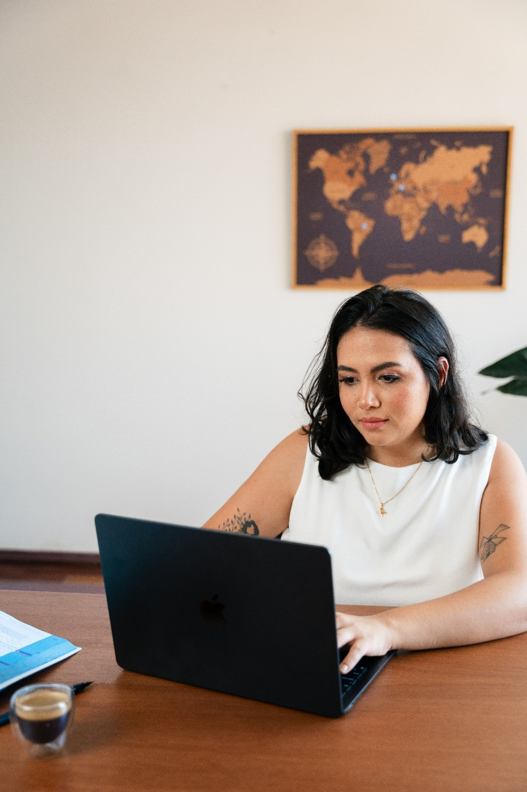

Mais de 50 planos de estudos para mulheres que querem inserir o inglês na rotina — mesmo com pouco tempo — com materiais autênticos e atividades eficazes.
Quero a minha Bússola →
O que você vai encontrar
Do A1 ao C1. Cada plano tem 5 dias de atividades com músicas, textos, podcasts e vídeos reais.
Talvez você só precise de um método que funcione melhor com o tempo que você já tem.
O inglês não precisa esperar sua vida acalmar. Eu sei que você já deixou o inglês pra depois. "Quando eu tiver mais tempo, eu começo." "Quando o trabalho estiver mais tranquilo, eu começo."
Mas esse momento ideal nunca chegou. Porque a vida real não costuma abrir um espaço perfeito na agenda só pra você estudar. É exatamente por isso que a Bússola nasceu. A Bússola foi criada pra mulheres reais — que têm vida, compromisso, trabalho — e que mesmo assim querem tirar o inglês do "depois".
Com a Bússola você tem: — uma trilha completa de estudos — os materiais certos pra cada etapa — uma atividade por dia, sem precisar improvisar — aulas onde eu te ensino as melhores técnicas pra praticar cada habilidade Porque quando o método depende de você "parar a vida" pra estudar, qualquer imprevisto vira motivo pra desistir. Mas quando o inglês entra de forma leve, prática e conectada com sua rotina — ele deixa de ser uma promessa distante e começa a virar parte do seu dia.
A Bússola é uma biblioteca de mais de 50 planos de estudos de inglês criados especialmente para mulheres adultas — estruturados, progressivos e pensados para caber na sua rotina real.
Porque aprender inglês com o que você já consome torna o aprendizado mais significativo. trabalhar o mesmo conteúdo sob óticas diferentes é o que faz o conteúdo consolidar de verdade, essa é a revisão espaçada na prática
Você não precisa estudar todo dia. Você não precisa ser perfeita. Você só precisa saber para onde ir.
Cada plano tem começo, meio e fim. Você sabe exatamente o que fazer em cada dia de estudo — sem improvisar, sem perder tempo.
Taylor Swift, Kiki's Substack, NY Times, TikTok. O inglês que você vai aprender na Bússola vive nos mesmos lugares que você já frequenta.
Os planos seguem uma trilha do A1 ao C1. Você começa do seu nível e avança no seu ritmo — sem pressa, sem pular etapas.
A metodologia
Cada plano começa com material autêntico — uma música, um texto, um vídeo. Você ouve, lê, analisa, escreve e fala usando o mesmo contexto ao longo de toda a semana. trabalhar o mesmo conteúdo sob óticas diferentes é o que faz o conteúdo consolidar de verdade, essa é a revisão espaçada na prática.
A trilha
A1 · Iniciante
Baby Steps
"Every big journey starts with a tiny step."
Para quem está começando do zero ou voltando depois de muito tempo. Aqui você aprende a se apresentar, falar sobre a sua rotina, descrever a sua família e a sua cidade — com material simples, fala lenta e muito espaço para errar sem julgamento.
A2 · Elementar
Fearless
"This is where confidence finds its voice."
Para quem já tem uma base e quer começar a ganhar confiança. Aqui você aprende a falar sobre hábitos, viagens, comparações e preferências. A sua voz em inglês começa a ganhar forma.
B1 · Intermediário
Speak Now
"You're further along than you think."
Para quem já se comunica mas ainda não acredita nisso. Aqui você aprende a dar opiniões, contar histórias no passado, falar sobre planos e possibilidades. A confiança que faltava começa a aparecer.
B2 · Intermediário Avançado
Ready, Steady, Go
"The woman who said 'I can't speak English' is already gone."
Para quem quer dar o salto para o nível avançado. Aqui você trabalha narrativas complexas, argumentação, condicionais, phrasal verbs e nuances de linguagem que fazem toda a diferença.
C1 · Avançado
The Fluent Department
"Welcome to the league of women who speak up."
Bem vinda ao departamento de mulheres que não tem medo de mostrar a sua voz.
A metodologia
Não porque tem mais conteúdo. Não porque é mais difícil. Mas porque foi construída a partir de uma pergunta diferente: como uma mulher adulta, com rotina cheia e cabeça ocupada, realmente aprende inglês?
01
A pesquisa em aquisição de linguagem é clara: você aprende mais rápido quando o material é real, não fabricado. Por isso cada plano usa músicas, textos do Substack, vídeos do TikTok e artigos do NY Times — não como ilustração, mas como base.
02
A Bússola é baseada no Lexical Approach: você não aprende palavras isoladas, você aprende expressões completas — chunks — dentro de um contexto real. É o que faz a palavra sair antes que você precise procurar.
03
Os planos foram desenvolvidos para que você vá além de só consumir conteúdos em inglês, aqui você vai colocar muito a mão na massa.
04
Cinco dias por semana, com atividades de 20 a 40 minutos. Sem exigir perfeição, sem cobrar sequência rígida. A Bússola foi pensada para mulheres que têm vida — e que ainda assim querem chegar lá.
05
Cada plano foi criado e revisado por mim — professora com mais de 9 anos de experiência no ensino de inglês para mulheres adultas. Não é conteúdo genérico. É metodologia com intenção e cuidado.
A professora
Oi, eu sou a Paloma. Professora de inglês, criadora de conteúdo e a pessoa que passou anos vendo mulheres incríveis se diminuírem por causa do inglês.
Com mais de 9 anos de experiência no ensino de inglês para adultos, trabalho com um método que não tem como objetivo a gramática, muito menos decorar listas e listas de vocabulário. Aqui você aprende inglês de forma contextualizada, autêntica e prática.
A Bússola é o produto que eu queria ter tido quando aprendi inglês. Criado com cuidado, técnicas e atualizado constantemente, porque a língua é viva e o seu método de estudo também precisa ser.
Dúvidas
Preciso ter algum conhecimento prévio de inglês?
Não. A trilha começa do zero — o Baby Steps foi criado exatamente para quem está voltando do início ou nunca teve uma base sólida.
Quantas horas por semana preciso estudar?
Cada day de plano foi pensado para durar entre 20 e 40 minutos. Se você estudar 3 vezes por semana já vai sentir progresso. Se puder fazer os 5 days, melhor ainda — mas a Bússola não te pune por ter uma semana corrida.
A Bússola substitui uma aula com professora?
Não — e não tenta. A Bússola é uma estrutura de estudos autônomos. Ela organiza o seu tempo e direciona o seu esforço. Para quem quer o acompanhamento de uma professora, existe a opção de aulas individuais com a Paloma.
Posso usar no celular?
Sim. A Bússola fica no Notion, que tem aplicativo para celular e funciona bem em qualquer dispositivo.
Por quanto tempo tenho acesso?
Em breve — os detalhes de acesso serão informados na página de compra.
O inglês que você quer falar não vai aparecer sozinho. Mas com a direção certa, ele aparece mais rápido do que você imagina. A Bússola não promete fluência em 30 dias. Promete estrutura, progressão e um plano que respeita a sua rotina.
Quero a minha Bússola → O material que vai revolucionar os seus estudos de inglês.